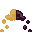
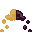
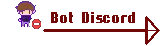
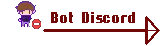

Cet Page parle de mes creations en pixel art pour un futur jeu video en haut et dans la suite,
ce qui serra apres le mot "Millenia" parlera de l'univers et de mes idees pour ce futur jeu
Les Petits Sprites :

Des Moveset :
Annimation :


Quelques Objets :


MILLENIA
Fiche Personnage :


Les Magie :
Le monde de Millenia possede 12 magies. Elles ont pour embleme les 12 Symbole en dessous du message discord. Chaque personne possede 1 a 2 d'entre elles represente par la couleur de leurs yeux.


 

••••Le Feu : La Magie du Feu est une magie qui permet de generer des flammes de toutes sortes mais elle concerne aussi la lave et les explosifs, il serra donc possible pour le joueur avec des personnages de cet attribut d'embraser les armes de leur allie comme genere des flammes.
••••L'Eau : La Magie de L'Eau concerne toutes les formes d'eau, il est donc possible de generer des pique de glace, cree des jets d'eau ou ce deplace en vapeur. cet attribut est un attribut qui peut avoir beaucoup d'interaction avec les autres attributs ainsi qu'avoir beaucoup d'utilite pour supporter son equipe.
••••La Fondre : La Magie de la Foudre se separe en deux categories, elle est principalement connue pour sa capacite a generer de l'electricite ainsi qu'a faire tomber de la foudre, ce qui est une magie tres offensive a courte distance mais surtout pratique pour pouvoir aveugler et etourdir les ennemies. L'autre grand principe de la magie de la foudre est la capacite a augmenter la rapidite des mouvements, augmentent les deplacements par tour.
•••••Le Vent : La Magie du Vent permet d'avoir le controle sur l'air, c'est donc une magie tres polyvalente qui permet d'etre offensif en generant des courants d'air tranchant, defensif en generant des boucliers d'air ou en support en poussant des allies ou ennemis avec de l'air.
••••La Roche : La Magie de la Creation permet de gerer la matiere en termes generaux mais elle permet aussi de les generer pour creer des defenses solides. les materiau le plus facile et solide utilise est souvent la roche mais d'autres materiaux plus solides sont possibles ce qui definira leur efficacite.
•••••Le Chao : La Magie du Chao ne permet pas grand-chose en dehors de l'offensif, elle peut toujours generer des nuages sombres mais au-dela de ca elle a pour principale utilite de dematerialiser les objets des choses, une magie tres efficace qui reste pas la plus rapide a utilise, il faut souvent un contact phisique pour beaucoup de personnes.
••••La Lumiere : La Magie de Lumiere elle ne permet pas forcement des grands assauts mais permet de se defendre en cas de situation critique avec des flashs et des halos de lumiere qui peuvent eblouir les ennemis, mais dans d'autres cas, elle permet de soigner des allies, ils connaissent les blessures personne et point faibles, leur magie permet donc de bien soigne ainsi que de cibler les points faibles lors de leur attaque.
••••L'Ombre : La Magie de L'Ombre est la magie aussi nommee Magie des Ames, elle a pour objectif de sceller des ames, c'est une magie qui fait des lourds degats aux ames des adversaires cette magie au beaucoup d'autres capacites comme scellees des capacites des son adverse les rendant impossible pendant un certain temps.
••••La Galaxie : La Magie de la Galaxie, la magie qui est considere excellente dans tous les domaines, elle permet de gerer la gravite donc de deplacer des allies pour les rapprocher d'une defense exemple, elle permet d'avoir un controle total aussi sur l'espace et connaissance de tout ce qui les entoure. La magie galactique aussi atteinte toute sa puissance quand les personnages peuvent reduire la gravite des armes allies pour plus sentir leur poids mais aussi generer des mini-étoiles, faire des novas ainsi que des trous noirs.
•••••Les Illusions : La Magie des Illusionniste n'est pas connue pour leur cote destructeur ni leur cote defensif mais pour leur cote discret et leur cote a destabiliser les adversaires. Ils ont le controle sur les sens des etres vivants, il est donc possible pour eux de se rendre invisible en les empechant de le voir, cree des créatures plus vraies que natures pour effrayer les adversaires. Il est aussi possible pour un illusionniste de plongee une personne dans une illusion, de ce fait il serra donc impossible jouer pour cet adversaire mais aussi il subira de grave degat avec ce qu'il verra et aussi ne pourra pas s'en echapper si elle n'est pas perce a jour.
••••Les Betes : La Magie des Betes est une magie de metamorphose et invocation d'insecte, d'animaux, de poisson, d'oiseau, d'humain. La magie permet aussi de parler et familiariser avec toute sorte de creature. Pour les personnes les plus imaginatives elle permet de faire leur propre creature avec une bonne maitrise de cet attribut.
•••••Les Reves/Cauchemars : La Magie des Reve et des Cauchemars a pour capacite de lire dans les pense, les desire et sentiment des etres vivants, il est donc possible de prevoir les attaques d'adversaire. D'ou son nom il est possible de facilement endormir un ennemi et influencer ses reves et cauchemars ou meme les rendre realite. En dernier capacite il est possible d'influencer les sentiments des autres en jouant sur leurs emotions et rendant leur espoir grand ou non leur donnant la motivation on non.


 
